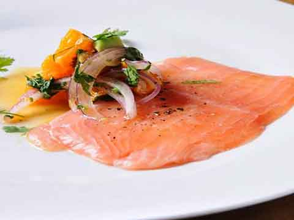

Las entradas son una parte fundamental de cualquier menu ya que nos da el inicio de lo que sera una grandiosa comida y nos eleva el apetito para dar paso a las siguientes degustaciones, cabe aclarar que no debe ser un plato que sature el paladar del invitado.
